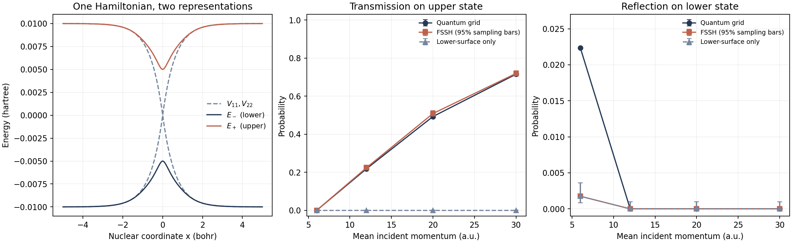

Chemical Reaction Computation - Part III
When One Electronic State Is Not Enough
Imagine preparing a molecule with a short pulse of light. Some molecules return to their original structure; others rearrange or break a bond. A barrier on the ground-state energy surface cannot, by itself, tell us which outcome wins. The molecule was prepared elsewhere, and its electrons and nuclei can change their motion together before a product is formed.
Part II asked how a landscape becomes a reaction rate. Here the question changes: what if one landscape is not enough? We follow a major line of exploration from trajectory surface hopping in the early 1970s to later mixed quantum–classical and wavepacket methods. This series began with hydrogen transfer, but its subject is now the broader history of calculating chemical reactions. There is no chosen method waiting at the end of the story.
1. A new question: where does the population go?
For a thermally activated reaction on one electronic state, a useful target is a rate constant. For an electronically excited molecule, equally natural targets are the lifetime of an excited population, the fractions reaching different products, and the energy carried by each outgoing fragment. Electron transfer and changes of spin introduce related questions, although spin-changing dynamics also require the appropriate spin–orbit interactions.
These questions predate the 1970s: the Born–Oppenheimer framework and the Landau–Zener crossing models already supplied important foundations. The historical step emphasized here is making coupled electronic and nuclear motion into a practical molecular simulation. In 1971, Tully and Preston applied trajectory surface hopping to the reaction of a proton with a deuterium molecule. In 1990, Tully introduced the fewest-switches algorithm used in the example below. These are distinct milestones, not two dates for the same algorithm. See the original 1971 paper and 1990 paper.
The central compromise is easy to state: retain quantum amplitudes for electronic states, while describing the much larger set of nuclear coordinates with trajectories. The difficult part is making the two descriptions influence each other consistently.
2. Where does nonadiabatic coupling come from?
We can see the issue with one nuclear coordinate \(x\), mass \(M\), and electronic coordinates \(r\). The electronic Hamiltonian below includes the nucleus-dependent potential terms. At each fixed nuclear position, solve
The functions \(E_j(x)\) are adiabatic potential-energy curves. “Adiabatic” here labels an electronic eigenbasis at each geometry; it does not yet impose single-state dynamics. Expand the full molecular wavefunction in that basis:
The nuclear kinetic operator differentiates both factors. The product rule is the whole origin of the additional coupling:
Insert the expansion into the molecular Schrödinger equation and multiply by \(\phi_i^*\), integrating over the electrons. Define
Orthonormality removes the electronic overlap from the first term, giving coupled nuclear equations:
This expansion is exact with a complete electronic basis. A practical calculation truncates the states; a single-surface treatment additionally neglects coupling to the other surfaces. Nonadiabatic dynamics asks what happens when that latter step is not justified. The coupling is not an extra empirical force or a synonym for friction: it follows from the geometry dependence of the electronic wavefunctions.
Why are small electronic gaps important?
Differentiate the electronic eigenvalue equation and project onto a different eigenstate, \(i\ne j\). The term containing \(E_j'\) vanishes by orthogonality:
A small gap can therefore amplify the coupling, but only in conjunction with the numerator and the actual nuclear motion. At an exact degeneracy this nondegenerate expression is not valid. A crossing geometry alone does not supply a reaction probability, a population lifetime, or a product yield.
3. Two representations of the same problem
A small two-state model keeps the distinction concrete. In a fixed diabatic basis, write the potential as
The off-diagonal potential \(u\) couples the two basis states. Diagonalization gives the adiabatic curves. Indeed,
When the diabatic diagonal elements cross at \(z=0\), the adiabatic gap is \(2|u|\). The avoided crossing and the diabatic crossing are thus not contradictory pictures. One uses diagonal electronic energies and derivative couplings; the other uses a coupled potential matrix. They describe the same model when every transformed term is retained.
For completeness, choose a continuous mixing angle \(\theta=\operatorname{atan2}(u,z)\), with lower and upper eigenvectors \((-\sin\frac\theta2,\cos\frac\theta2)\) and \((\cos\frac\theta2,\sin\frac\theta2)\). Differentiation yields
Reversing an eigenvector's sign also changes the corresponding coupling and amplitude signs; observables remain unchanged if the convention is consistent. Globally eliminating derivative couplings is not always possible for a multidimensional molecule. Our fixed two-state diabatic Hamiltonian is a deliberately simple model, not a claim that every molecular diabatization is exact.
4. From quantum amplitudes to nuclear trajectories
Suppose we approximate the nuclei by a trajectory \(x(t)\) and expand its electronic state as \(\psi_e(t)=\sum_jc_j(t)\phi_j[x(t)]\). Now the chain rule gives a time derivative of the moving electronic basis. Projection leads to
Even though the adiabatic electronic Hamiltonian is diagonal, nuclear motion transfers amplitude through \(\dot x d_{ij}\). In many dimensions this becomes \(\dot{\mathbf R}\cdot\mathbf d_{ij}\): direction matters as well as speed.
One average force, or different outgoing branches?
The Ehrenfest mean-field choice uses the expectation of the electronic force. It follows from Ehrenfest's equation for nuclear momentum after replacing its nuclear coordinate distribution by a trajectory:
This is a self-consistent feedback loop: the trajectory changes the electronic amplitudes, which change the force. The expectation includes coherence terms; it is not generally just a population-weighted average of the surface gradients.
But a single mean-field trajectory does not split into distinct nuclear packets. If one electronic branch reflects and another transmits, an average trajectory need not represent either outgoing channel. Surface hopping makes a different approximation: each trajectory follows one active surface at a time, while an ensemble can separate into branches. Neither construction is the exact coupled wavefunction.
5. How fewest-switches surface hopping chooses a hop
For a real adiabatic basis with zero diagonal derivative couplings, differentiate the electronic population \(\rho_{aa}=|c_a|^2\). The energy term contributes only a phase and cancels:
A positive \(J_{a\to b}\) is outgoing electronic population flow. If a fraction \(\rho_{aa}\) of otherwise equivalent trajectories occupies state \(a\), switching a fraction \(g_{a\to b}\) of them transfers \(\rho_{aa}g_{a\to b}\). Matching this to the outward population change over a short time gives
This motivates the fewest-switches rule: use the required outward flow without adding compensating pairs of needless switches. It does not require every trajectory to follow identical amplitudes. Once their paths diverge, active-state fractions and averaged electronic populations need not agree exactly; frustrated hops add another inconsistency. Surface hopping is an approximation, not an exact probabilistic rewriting of quantum dynamics.
A successful hop must also exchange electronic potential energy with nuclear kinetic energy. In one dimension, conservation gives
If the square root is not real, the proposed upward hop is frustrated. In our implementation it is rejected and the momentum is left unchanged. For more nuclear coordinates, a standard choice rescales momentum along the derivative-coupling direction. Time steps must resolve the population flow; routinely clipping probabilities above one would hide an integration problem.
In practice the loop is: sample initial positions and momenta; evaluate energies, forces, and couplings; advance nuclei and electronic amplitudes; draw hops and rescale momentum; repeat until the outgoing channels separate; then count outcomes. Thousands of trajectories reduce sampling noise, but cannot remove the physical approximations.
6. A calculation small enough to audit
We use Tully's simple avoided-crossing model, in atomic units, with \(M=2000\):
The nuclei arrive from the left on the lower electronic state. We compare three descriptions: classical motion confined to that lower surface, fewest-switches surface hopping without a decoherence correction, and a two-component quantum wavepacket. The potential, mass, and incoming distribution are the same in all three. These are new calculations of the standard model, not digitized data from the original paper.
Match the preparation before comparing the answers
The incident quantum packet has mean position \(x_0=-12\), width \(\sigma=1\), and mean momentum \(p_0\):
Squaring the envelope gives a position variance \(\sigma^2\). Fourier transformation gives momentum variance \(\hbar^2/(4\sigma^2)\). Its positive Gaussian Wigner function therefore allows trajectory initialization with independent samples
The packet starts in diabatic component 1, which is indistinguishable from the lower adiabatic state this far from the coupling region. The benchmark uses \(p_0=6,12,20,30\), with 4,000 trajectories per momentum and method. A finite-width packet averages over incident energies. Comparing it with one strictly monochromatic trajectory would mix a preparation difference into a method comparison.
What is “exact” here?
For the quantum reference, propagate the two-component wavefunction under the same Hamiltonian:
A Fourier grid, also called a Fourier DVR, represents position and momentum on dual grids. The kinetic step is diagonal in momentum; the potential step is a local two-by-two matrix in position. Symmetric splitting follows by matching the short-time exponential expansion through second order:
There is no hopping rule in this propagation. Nuclear reflection, splitting, and coherent evolution all follow from the coupled Hamiltonian. The splitting has a finite time-step error, and the grid has a finite spatial error, so “exact” means a numerically converged result for this one-coordinate, two-state model. It does not mean exact chemistry or error-free arithmetic.
The reported reference uses 4,096 points on \([-64,64)\) and \(\Delta t=0.25\). We compare it with 2,048 points and \(\Delta t=0.5\), and with a larger box and later observation. The script also records probability near the box edges, unseparated central probability, and norm conservation. No absorber is used; observations must precede significant periodic-boundary return.
Count the same outgoing channels
Let \(r_V=\sqrt{z^2+u^2}\). Since \(V^2=r_V^2I\), its adiabatic projectors are
This follows by applying the expression to an eigenvector with eigenvalue \(\pm r_V\): the matching projector returns one and the other zero. Once the packets have separated, integrate on either side:
For trajectories, the corresponding quantities are fractions exiting to the right or left on the specified active surface. The electronic coefficient \(|c_+|^2\) on one hopping trajectory is not itself an outgoing-channel count.

| Mean \(p_0\) (a.u.) | Quantum \(T_+\) | FSSH \(T_+\) | Quantum \(R_-\) | FSSH \(R_-\) |
|---|---|---|---|---|
| 6 | \(<10^{-8}\) | 0 observed | 0.02235 | 0.00175 |
| 12 | 0.21866 | \(0.2243\pm0.0066\) | \(8.1\times10^{-7}\) | 0 observed |
| 20 | 0.49299 | \(0.5088\pm0.0079\) | \(8.6\times10^{-9}\) | 0 observed |
| 30 | 0.71538 | \(0.7195\pm0.0071\) | \(2.6\times10^{-10}\) | 0 observed |
The table's \(\pm\) values are one sampling standard error, \(\sqrt{\hat P(1-\hat P)/N}\), obtained from the variance of a binomial count divided by \(N^2\). They are narrower than the figure's 95% intervals. Zero observed events does not prove a zero underlying probability: with 4,000 trials, the Wilson upper limit is about \(9.6\times10^{-4}\). Tiny quantum reflection values should likewise be read as negligible at this benchmark's accuracy, not as relatively converged predictions to every printed digit.
At \(p_0=12\) and 30, FSSH captures upper-state transmission to within the sampled uncertainty. At \(p_0=20\), the difference is about 0.016, roughly two standard errors; halving the time step gives 0.5025, so this small ensemble does not cleanly resolve a systematic bias there. The low-momentum reflection is a clearer failure: at \(p_0=6\), the quantum result is 2.23%, whereas both trajectory methods give 0.175%. Adding electronic hops has not supplied full quantum nuclear dynamics.
Why does upper-state transmission grow with speed? On the far left, diabatic state 1 is the lower adiabatic state; on the far right, it is the upper one. A fast passage can retain much of its original diabatic character while changing its adiabatic label. “An electronic transition” therefore needs a specified basis; it does not always mean a sudden change of chemical charge localization.
The largest absolute channel-probability change in the grid/time-step check is \(6.7\times10^{-7}\); the larger-box/later-time check changes a channel by less than \(1.2\times10^{-7}\). At most \(2.0\times10^{-6}\) of the quantum probability remains in the central region. Norm drift is below \(10^{-11}\), all trajectory exit counts are resolved, and the largest trajectory energy drift is below \(4.1\times10^{-7}\) hartree. These checks support the displayed probability precision, not a universal guarantee about either method.
7. What this comparison can—and cannot—establish
The one-surface model has no mechanism for populating the upper surface: its \(T_+\) is identically zero. Allowing electronic transitions opens a channel that was missing structurally, not merely underestimated through a slightly inaccurate barrier. Agreement with the coupled quantum result tests whether the hopping dynamics allocates population sensibly for this preparation.
It does not establish that surface hopping is universally accurate. Independent classical trajectories do not retain the relative nuclear phases needed for interference between separated packets. Their electronic amplitudes can also stay coherent after the associated nuclear branches have separated, motivating decoherence treatments. Frustrated-hop choices, classically forbidden nuclear motion, repeated passages, and electronic-structure errors can all matter in other regimes. Increasing the trajectory count only addresses statistical uncertainty.
Most importantly, the plotted numbers are probabilities, not rate constants. “Upper” is an electronic-state label and “transmitted” is a model scattering label; neither automatically denotes a chemically distinct product. To calculate an experimental reaction yield, a molecular application must define product structures and prepare the same initial ensemble as the experiment.
For an isolated excited population following a single exponential law, the bridge to a lifetime is simple. If \(dP_e/dt=-kP_e\), separating variables and integrating gives
But coherent transfer, back transfer, or multiple channels need not produce an exponential. Nor is a measured transient absorption signal generally equal to a state population: transition strengths, nuclear geometry, pulse characteristics, and the instrument response enter the forward model. The observable-first lesson of Part I still applies.
8. An important exploration, not a final answer
Surface hopping is one answer to a cost problem, not the only answer to multistate dynamics. Another line keeps an explicit nuclear wavefunction while seeking a more economical representation. Meyer, Manthe, and Cederbaum's 1990 MCTDH work used time-dependent configurations to address multidimensional propagation. Multiple-spawning methods developed a different strategy: moving nuclear basis functions with additional branches generated when needed; Ben-Nun, Quenneville, and Martínez's 2000 article connects that approach to first-principles photochemistry. These developments pursued different balances between quantum detail and molecular scale.
The next subject in this series is free energy and rare-event sampling: even with a usable Hamiltonian, how do we discover and count events that ordinary trajectories almost never see? After that, we will explore work on tunneling and quantum nuclear reaction dynamics. These strands overlap historically—the next article returns to developments of the 1970s—and neither is simply a replacement for nonadiabatic dynamics.
Reproduce and inspect
- Standalone Python calculation and figure script — NumPy, SciPy, and Matplotlib.
- Channel probabilities and trajectory diagnostics (CSV).
- Quantum convergence and FSSH half-time-step checks (CSV).
python assets/code/reaction-dynamics/nonadiabatic_scattering.pyThe script defines the Hamiltonian, initial ensemble, random seed, propagators, exit rules, error checks, and figures. More specialized implementation notes are available in the separate FSSH and Ehrenfest articles; their earlier benchmark setups are not interchangeable with the matched-ensemble calculation here.
Historical sources
- Tully and Preston, “Trajectory Surface Hopping Approach to Nonadiabatic Molecular Collisions: The Reaction of H+ with D2,” J. Chem. Phys. 55, 562–572 (1971).
- Tully, “Molecular Dynamics with Electronic Transitions,” J. Chem. Phys. 93, 1061–1071 (1990).
- Meyer, Manthe, and Cederbaum, “The Multi-Configurational Time-Dependent Hartree Approach,” Chem. Phys. Lett. 165, 73–78 (1990).
- Ben-Nun, Quenneville, and Martínez, “Ab Initio Multiple Spawning: Photochemistry from First Principles Quantum Molecular Dynamics,” J. Phys. Chem. A 104, 5161–5175 (2000).